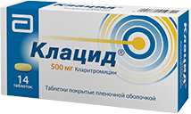
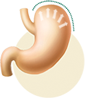
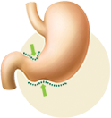
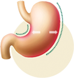
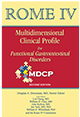

|
|
|
В 90% случаев причина гастрита –
инфекция H. pylori1
|
|
Согласно рекомендациям РГА «Лечение инфекции Helicobacter pylori: мейнстрим и новации»
1-я
линия
стандартной тройной терапии (ИПП + кларитромицин + амоксициллин или
метронидазол)
считается
наиболее изученной2
|
|
ИПП – стандартная дозировка 2 раза
в сутки (например, Париет®)
|
|
Кларитромицин 500 мг 2 раза в сутки (например,
Клацид®)
|
|
Амоксициллин
1000 мг 2 раза
в сутки
|
|
Продолжительность лечения 14 дней
|
|
▶
|
На курс необходимо 2 упаковки Клацид® 500 мг
|
|
▶
|
Форма выпуска Клацид® 500 мг обеспечивает высокие пики концентрации действующего
вещества,
позволяя достичь эффективной эрадикации H. pylor3
|
|
Клацид® – единственный из макролидов, включенный в международные и
национальные
российские
рекомендации по лечению Helicobacter pylori 2,4,5
|

|
|
Пациенты с подозрением на хронический гастрит обращаются к Вам с жалобами именно на симптомы
диспепсии. Эти жалобы могут быть связаны с нарушением моторики желудка.
|
|
Причины возникновения симптомов диспепсии6,7
|
|

|

|

|
|
Нарушение
релаксационной
аккомодации желудка
|
Замедление
эвакуаторной
функции желудка
|
Висцеральная
гиперчувстви-
тельность
|
|
|
|
|
|
Тошнота и рвота
|
Изжога
|
Снижение веса
|
|
Чувство переполнения после еды
|
Рефлюс
|
Эпигастральная боль
|
|
Раннее насыщение
|
Отрыжка
|
|
|

|
Для восстановления моторики желудка российские и европейские сообщества рекомендуют
итоприда
гидрохлорид – препарат из класса прокинетиков 8,9
|
|
Ганатон® может быть назначен уже на первом визите, так как он не влияет на
тесты, выявляющие
хеликобактер, и одновременно поможет пациенту облегчить симптомы уже на этапе диагностических
обследований10
|
|
Для разных этапов терапии11:
|
|
|

|
|
1 упаковка
препарата Ганатон® №40
|
2 упаковки
препарата
Ганатон® №70
|
|
Эмпирическая
терапия
|
Курсовая терапия
диспепсических симптомов
|
Ганатон® следует принимать
по 1 таблетке 3 раза в сутки до еды
|
| Источники: |
1. Гастроэнтерология: национальное руководство / под ред. В.Т. Ивашкина, Т.Л. Лапиной. М.:
ГЭОТАР-Медиа, 2008.
2. В.Т. Ивашкин, И.В. Маев, Т.Л. Лапина и соавт. Рекомендации РГА «Лечение инфекции
Helicobacter
pylori: мейнстрим и новации».
3. Darkes M. J. M. et al. Clarithromycin Extended-Release Tablet. Am J Respir Med 2003; 2
(2):
175-201
4. Cizginer S. et al. Approach to Helicobacter pylori infection in geriatric population.
World
J. Gastrointest Parm. Ther. 2014; 5(3):139-147.
5. Malfertheiner P, Megraud F, O’Morain CA et al. Management of Helicobacter pylori
infection
–
the Maastricht V/Florence Consensus Report. Gut 2017; 66:6-30
6. Parkman H. Handb Exp Pharmacol. 2017;239:17-37.
7. Маев И.В., Андреев Д.Н., Кучерявый Ю.А. и др. Современные представления о
патофизиологических
основах синдрома функциональной диспепсии. РЖГГК. 2015; 4: 15-22.
8. Ивашкин В.Т., Маев И.В., Шептулин А.А. и соавт. Клинические рекомендации Российской
гастроэнтерологической ассоциации по диагностике и лечению функциональной диспепсии. РЖГГК
2017;
27(1): 50-61
9. Stanghellini V., Chan F.K.L., Hasler W.L., Malagelada J.R., Suzuki H., Tack J., Talley
N.J.
Gastr Dis Gastroenterol.
10. Маев И.В., Трухманов А.С., Шептулин А.А. Роль нарушений моторики в патогенезе
функциональных
расстройств желудочно-кишечного тракта и современные возможности их лечения (Резолюция
Экспертного совета и обзор литературы). РЖГГК. 2019;29(6):7-14.
11. Инструкция по медицинскому применению препарата Ганатон® 50 мг таблетки, покрытые
оболочкой,
от 16.07.2019
|
Ганатон®
Регистрационный номер: ЛС-002513
Международное непатентованное или группировочное наименование: итоприд.
Лекарственная форма: таблетки, покрытые пленочной оболочкой, 50 мг. Фармакологические
свойства. Фармакодинамика*: итоприд характеризуется двойным механизмом действия: антагонизм к
D2-дофаминовых рецепторам и ингибирование ацетилхолинэстеразы. Итоприда гидрохлорид также
оказывает противорвотный эффект за счет взаимодействия с D2-дофаминовыми рецепторами,
расположенными в хеморецепторной триггерной зоне продолговатого мозга. Действие препарата у
пациентов с функциональной диспепсией приводит к снижению выраженности симптомов (общая
оценка пациентом, постпрандиальная тяжесть в животе, раннее насыщение). Применение итоприда
пациентами с диабетическим гастропарезом способствовало ускорению эвакуации из желудка жидкой
и твердой пищи. У пациентов с гастроэзофагеальной рефлюксной болезнью (ГЭРБ) итоприд
уменьшает количество преходящих расслаблений нижнего пищеводного сфинктера и уменьшает
продолжительность времени с высокой кислотностью в пищеводе (рН < 4). При совместном
применении итоприда гидрохлорида с альфа-липоевой кислотой наблюдалось ускорение процесса
опорожнения желудка и снижение уровня гастрина и мотилина в сравнении с монотерапией
итопридом. Показания к применению: применяют для лечения желудочно-кишечных симптомов,
связанных с нарушением моторики желудка или его замедленным опорожнением, таких как:
вздутие живота, быстрое насыщение, чувство переполнения в желудке после приема пищи, боль
или дискомфорт в эпигастральной области, снижение аппетита, изжога, тошнота и рвота;
функциональная (неязвенная) диспепсия или хронический гастрит. Противопоказания:
повышенная чувствительность к итоприду или любому вспомогательному компоненту препарата;
пациенты с желудочно-кишечным кровотечением, механической обструкцией или перфорацией;
детский возраст до 16 лет (в связи с отсутствием данных по безопасности); беременность и
период грудного вскармливания. С осторожностью: итоприда гидрохлорид усиливает действие
ацетилхолина, что может вызывать холинергические побочные реакции. Препарат следует
назначать с осторожностью категории пациентов, для которых появление таких реакций может
усугубить течение основного заболевания. Пациентам пожилого возраста итоприд следует
назначать с осторожностью, учитывая более высокую частоту снижения функции печени и почек,
наличие сопутствующих заболеваний или другое лечение. Применение при беременности и в
период грудного вскармливания*: Фертильность. Данные о влиянии итоприда на фертильность у
человека отсутствуют. Беременность. Исследования на животных не выявили признаков прямого
или непрямого отрицательного влияния итоприда, указывающих на репродуктивную токсичность.
В целях предосторожности следует избегать применения итоприда при беременности. Период
грудного вскармливания. При кормлении грудью нельзя исключать риск влияния препарата на
ребенка. Решение о прекращении грудного вскармливания или отмене/перерыве в приеме
препарата следует принимать, основываясь на оценке пользы грудного вскармливания для
ребенка и пользы препарата для матери. Способ применения и дозы*: внутрь по 1 таблетке
препарата Ганатон® 50 мг 3 раза в сутки до еды. Указанная доза может быть снижена с учетом
возраста и симптомов больного. В клинических исследованиях продолжительность лечения
препаратом Ганатон® составляла до 8 недель. Побочное действие*: нарушения со стороны
желудочно-кишечного тракта: часто – боль в животе, диарея; нечасто – повышенное
слюноотделение; лабораторные и инструментальные данные: нечасто – повышение активности
аланинаминотрансферазы (АЛТ), снижение количества лейкоцитов; нарушения со стороны нервной
системы: нечасто – головокружение, головная боль; нарушения со стороны кожи и подкожных
тканей: нечасто – сыпь. Перечень всех побочных действий представлен в инструкции по
медицинскому применению. Передозировка: при передозировке показаны промывание желудка и
симптоматическая терапия. Взаимодействие с другими лекарственными средствами*:
метаболическое взаимодействие не ожидается. При одновременном применении варфарина,
диазепама, диклофенака натрия, тиклопидина гидрохлорида, нифедипина и никардипина
гидрохлорида изменений связывания с белками не наблюдалось. Итоприд усиливает моторику
желудка, поэтому он может повлиять на всасывание других препаратов, принимаемых внутрь.
Особую осторожность следует соблюдать при применении препаратов с низким терапевтическим
индексом, а также лекарственных форм с замедленным высвобождением или препаратов с
кишечнорастворимой оболочкой. Противоязвенные препараты, такие как циметидин, ранитидин,
тепренон и цетраксат, не влияют на прокинетическое действие итоприда. Антихолинергические
средства могут ослабить эффект итоприда. Особые указания*: итоприд усиливает действие
ацетилхолина и может вызвать холинэргические побочные реакции. Влияние на способность
управлять транспортными средствами, механизмами: исследований относительно влияния
итоприда на способность к управлению автомобилем и механизмами не проводилось. Однако в
период лечения препаратом следует соблюдать осторожность при выполнении потенциально
опасных видов деятельности, требующих повышенной концентрации внимания и быстроты
психомоторных реакций (управление транспортными средствами, работа с движущимися
механизмами, работа диспетчера и оператора), так как применение препарата может вызвать
головокружение. Условия отпуска: отпускается по рецепту. *Полная информация представлена в
инструкции по медицинскому применению. СИП от 21.08.2019 на основании ИМП от 16.07.2019
|
|
Клацид® МНН:
кларитромицин Регистрационный номер: ЛС-000679. Лекарственная форма: таблетки, покрытые
пленочной оболочкой, 500 мг.
Показания к применению: инфекционно-воспалительные заболевания, вызванные чувствительными к
кларитромицину микроорганизмами у взрослых и детей старше 12 лет: инфекции нижних дыхательных
путей (такие как бронхит, пневмония); инфекции верхних дыхательных путей (такие как фарингит,
синусит); инфекции кожи и мягких тканей (такие как фолликулит, воспаление подкожной
клетчатки, рожа); диссеминированные или локализованные микобактериальные инфекции, вызванные
Mycobacterium avium и Mycobacterium intracellulare; локализованные инфекции, вызванные
Mycobacterium chelonae, Mycobacterium fortuitum и Mycobacterium kansasii; профилактика
распространения инфекции, обусловленной комплексом Mycobacterium avium (MAC),
ВИЧ-инфицированным больным с содержанием лимфоцитов CD4 (Т-хелперных лимфоцитов) не более 100
в 1 мм3; эрадикация H.pylori и снижение частоты рецидивов язвы двенадцатиперстной кишки.
Противопоказания: повышенная чувствительность к кларитромицину, макролидам и другим
компонентам препарата; одновременный прием кларитромицина со следующими препаратами:
астемизол, цизаприд, пимозид, терфенадин (см. раздел «Взаимодействие с другими лекарственными
препаратами»); одновременный прием кларитромицина с алкалоидами спорыньи, например,
эрготамин, дигидроэрготамин (см. раздел «Взаимодействие с другими лекарственными
препаратами»); одновременный прием кларитромицина с мидазоламом для перорального применения
(см. раздел «Взаимодействие с другими лекарственными препаратами»); одновременный прием
кларитромицина с ингибиторами ГМГ-КоА-редуктазы (статинами), которые в значительной степени
метаболизируются изоферментом CYP3A4 (ловастатин или симвастатин), в связи с повышением риска
миопатии, включая рабдомиолиз (см. раздел «Взаимодействие с другими лекарственными
препаратами»); одновременный прием кларитромицина с колхицином (см. раздел «Взаимодействие с
другими лекарственными препаратами»); одновременный прием кларитромицина с тикагрелором или
ранолазином; удлинение интервала QT в анамнезе (врожденное или приобретенное
зарегистрированное удлинение интервала QT) или желудочковая аритмия, включая желудочковую
тахикардию типа «пируэт» (см. разделы «Особые указания» и «Взаимодействие с другими
лекарственными препаратами»); гипокалиемия (риск удлинения интервала QT); тяжелая печеночная
недостаточность, протекающая одновременно с почечной недостаточностью, холестатическая
желтуха/гепатит в анамнезе, развившиеся при применении кларитромицина (см. раздел «Особые
указания»); порфирия; период грудного вскармливания; возраст до 12 лет (эффективность и
безопасность не установлены). С осторожностью*: почечная недостаточность средней и тяжелой
степени; печеночная недостаточность средней и тяжелой степени; пациенты с ишемической
болезнью сердца (ИБС), тяжелой сердечной недостаточностью, гипомагниемией, нарушениями
проводимости и клинически значимой брадикардией. Применение при беременности и в период
грудного вскармливания*: безопасность применения кларитромицина во время беременности и в
период грудного вскармливания не установлена. Применение кларитромицина при беременности
(особенно в I триместре) возможно только в случае, когда отсутствует альтернативная терапия,
а потенциальная польза для матери превышает потенциальный риск для плода. При необходимости
приема в период лактации грудное вскармливание необходимо прекратить. Способ применения и
дозы: для приема внутрь, независимо от приема пищи. Обычная рекомендованная доза
кларитромицина у взрослых и детей старше 12 лет – 250 мг 2 раза в день (в этом случае
возможно применение препарата Клацид® таблетки покрытые пленочной оболочкой, 250 мг).
Кларитромицин 500 мг 2 раза в день используют в случае более тяжелых инфекций. Обычная
продолжительность лечения составляет от 5 до 14 дней. Исключение составляют внебольничная
пневмония и синусит, которые требуют лечения от 6 до 14 дней. Дозы для лечения
микобактериальных инфекций, кроме туберкулеза: при микобактериальных инфекциях рекомендована
доза кларитромицина 500 мг 2 раза в день. Лечение диссеминированных MAC инфекций у пациентов
со СПИД следует продолжать до тех пор, пока имеется клиническая и микробиологическая
эффективность. Кларитромицин следует назначать в комбинации с другими антимикробными
препаратами, активными в отношении данных возбудителей. Длительность лечения других
нетуберкулезных микобактериальных инфекций устанавливает врач. Для профилактики инфекций,
вызванных МАС: рекомендуемая доза кларитромицина для взрослых – 500 мг 2 раза в день. Для
эрадикации H. pylori: у пациентов с язвенной болезнью, вызванной инфекцией H. pylori,
кларитромицин можно назначить по 500 мг 2 раза в день в комбинации с другими антимикробными
препаратами и ингибиторами протонного насоса в течение 7-14 дней, в соответствии с
национальными и международными рекомендациями по лечению инфекции H. pylori. Пациенты с
почечной недостаточностью: больным с клиренсом креатинина менее 30 мл/мин назначают половину
обычной дозы кларитромицина (в данном случае используется доза 250 мг). Лечение таких больных
продолжают не более 14 дней. Применение у детей младше 12 лет: применение кларитромицина в
виде таблеток у детей младше 12 лет не изучалось. Побочное действие*: сыпь; головная боль,
бессонница; интенсивное потоотделение; диарея, рвота, диспепсия, тошнота, боли в области
живота; дисгевзия; вазодилатация; отклонение в печеночной пробе. Передозировка*: симптомы:
прием большой дозы кларитромицина может вызвать симптомы нарушений со стороны
желудочно-кишечного тракта. У одного пациента с биполярным расстройством в анамнезе после
приема 8 г кларитромицина описаны изменения психического состояния, параноидальное поведение,
гипокалиемия и гипоксемия. Взаимодействие с другими лекарственными препаратами*:
антиаритмические средства (хинидин и дизопирамид): возможно возникновение желудочковой
тахикардии типа «пируэт» при совместном применении кларитромицина и хинидина или
дизопирамида. При совместном применении кларитромицина и пероральных гипогликемических
средств (например, производные сульфонилмочевины) и/или инсулина может наблюдаться выраженная
гипогликемия; рекомендуется тщательный контроль концентрации глюкозы. Непрямые
антикоагулянты: при совместном приеме варфарина и кларитромицина возможно кровотечение,
выраженное увеличение МНО и протромбинового времени. Особые указания*: возможно развитие
перекрестной резистентности к кларитромицину и другим антибиотикам группы макролидов, а также
линкомицину и клиндамицину. Влияние на способность управлять транспортными средствами и
механизмами: данные относительно влияния кларитромицина на способность к управлению
автомобилем и механизмами отсутствуют. Следует соблюдать осторожность при управлении
транспортными средствами и механизмами, учитывая потенциальную возможность головокружения,
вертиго, спутанности сознания и дезориентации, которые могут возникнуть при применении
данного препарата. Срок годности*: 3 года. Условия отпуска: по рецепту.*Полная информация по
препарату представлена в инструкции по медицинскому применению.СИП от 08.04.2020 на основании
ИМП от 17.03.2020
|
|
ООО «Эбботт Лэбораториз»
125171, Москва, Ленинградское шоссе, дом 16а, стр. 1,
бизнес-центр «Метрополис»
Тел.: 8 (495) 258-42-80, факс: 8 (495) 258-42-81,
www.ru.abbott.
RUS2160665 от 09.09.2020
|
|
Информация предназначена для медицинских и фармацевтических работников
|
|